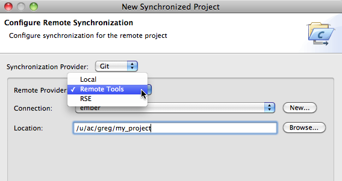

Projects comprise the source code, build rules (e.g. makefiles), and build results (e.g. object files and executables) for a particular application. These projects can reside in a number of different locations, including on the user's local machine, on a remote system, or in a source code repository. The target systems on which these applications run are also typically located at remote sites, though users may also want to run the applications on their local machines.
To cater to as many situations as possible, PTP supports a variety of project and target system configurations. In addition to normal Eclipse projects, PTP adds two new project types. With PTP installed, the user has the choice of the following project types:
In addition to the project location, there are two other activities that depend on the user's desired working environment and target system configuration. These include where the project will be built, and where the application will be launched (including where it will be launched in order to be debugged.) These activities tend to be interrelated, since, for example, launching an application requires access to the executable. But if the executable is built locally, and should be launched on a remote system, then it will need to be staged to the remote machine. Similarly, if the executable is to be built and launched remotely, the location of the executable must be known for it to be launched.
The projects and services provided by PTP can operate both locally and remotely. In order to determine how to access local and remote files and systems, PTP uses a number of remote service providers. There are three remote service providers that are available to PTP:
Local projects are the default type for Eclipse projects. All files reside on the local machine, which is the same machine on which Eclipse is running. The section Creating MPI Projects describes mostly this type of local project. These projects may have been checked out or cloned from a source repository, but the user is working on a local copy of the code. Updates to the repository must be controlled manually by the user.
Local projects can only be built locally, but the executable can be run either locally or remotely. However, an executable built locally can be run remotely only if both the local and remote machines have the same architecture, or the executable was built using a cross compiler.
Remote Development Tools (RDT) is part of PTP and provides the ability for C and C++ projects to be located and developed remotely. Fortran projects can also be developed using RDT, but certain functionality (such as content assist and searching) will not be available. In a remote project, the source code and other files are located on a remote system but appear to the user as if they are on the local machine. They are brought to the local machine only when opened in an editor. When the project is built, the build happens on the remote system and the resulting executable will be located on the remote system also. Launching the executable requires a resource manager that has been configured to use the remote target system.
When creating a remote project, the New Remote C/C++ Project wizard allows the user to choose which type of remote service provider to use, as shown below:

Remote projects have a number of limitations. In order to work on the remote project, the user requires a constant network connection to the remote system, which precludes off-line development. Some Eclipse features are also not available on remote projects. Remote projects can only be checked out or cloned from a version control system on the remote system, and the user will have no access to the normal Team functionality through the Eclipse user interface. Remote projects do have the advantage that a copy of the source code is not required on the user's system, which may be a requirement in some environments.
Synchronized projects maintain a copy of the source code and other project files on both the local system and the remote system. The user edits the local copy of a file, then each file is synchronized with the remote system when it is saved. Files that are created or deleted are also synchronized with the remote system. In addition, if files are changed on the remote system, these will be synchronized with the local system on a regular basis. A single project can be synchronized with multiple remote systems. Projects that are checked out or cloned from a version control system can also be synchronized, as Team operations are independent of the synchronization process.
Synchronized projects support multiple build configurations, so the build can happen either locally or on one or more remote systems. The user can select which system will be used to build the project. A launch configuration can then be created to to run the application on the target machine.
When creating a synchronized project, the New Synchronized Project wizard provides a page to choose the service provider to use:
Synchronized projects offer a number of advantages over remote projects. Keeping a local copy of the source code enables faster interaction during editing, and all the normal C, C++ and Fortran editor, content assist, and search features are available. Synchronized projects do not require a constant network connection, so development can continue off-line, then the project can be re-synchronized when a network is available. One disadvantage of synchronized projects is that a copy of the source code is kept on the user's local machine, which may not be permitted by some organizations.
See the Synchronized Projects section for more information.